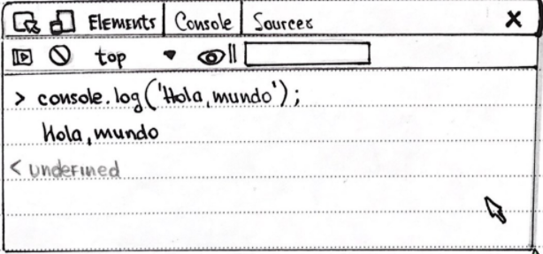

Ejemplo
Comentarios

¿Qué es?
JavaScript es un lenguaje de scripting multiplataforma y orientado a objetos. JavaScript ≠ Java. La consola JavaScript Muestra información sobre la página web que se está ejecutando en ese momento, y también incluye la línea de comando que puedes usar para ejecutar expresiones JavaScript en la página actual. La Función console.log () muestra la información proporcionada en la consola JavaScript.
Comentarios
JavaScript tiene dos tipos de sintaxis de Comentarios:Los comentarios son anotaciones en el código Fuente de un programa que son ignoradas por el intérprete. Los comentarios deben usarse para describir aspectos importantes, por ejemplo, aspectos que permitan una mejor comprensión del código.
Declaraciones de Variables
Las variables se usan como nombres simbólicos para valores en tu aplicación. Los nombres de las variables, llamados identificadores te rigen por ciertas reglas. Un Identificador en] S tiene que empezar por una letra, un guion bajo (_) o un símbolo de $, los valores subsiguientes pueden ser números. Java Script difería entre mayúsculas y minúsculas, por lo tanto, las letras incluyen desde la “A” a la “Z” y desde la "a" a la "z". Hay 3 tipos de declaraciones en JavaScript. Var: | Declara una variable, inicializadora opcionalmente a un valor. Podrá cambiar su valor y su scope es local. Let: | Declara una variable local En un bloque de ámbito, inicializadora opcionalmente a un valor. Podrá cambiar su valor. Const: | Declara una variable de solo lectura en un bloque de ámbito. No ser posible caminar su valor. Mediante la asignación.
Ámbito de una variable
Cuando declaras una variable Fuera de una función, se le denomina VARIABLE GLOBAL, porque está disponible para cual que otro código en el documento actual. Cuando declaras una variable dentro de una función, se le denomina VARIABLE LOCAL porque Está disponible solo dentro de esa función donde fue creada.
Variable Hoisting
Las variables En JavaScript pueden hacer referencia a una variable declarada más tarde. Este concepto se lo Conoce como HOISTING. Las variables son "Elevadas" a la parte superior de la función o la declaración. Las variables que no se han inicializado todavía devolvieran un valor undEFiNed
Tipo de datos
*String: Secuencia de caracteres que representan un valor. Ej: ‘Hola’ *Number: Valor numérico (entero, decimal …) Ej: 555 *Boolean: Valores true o False *Null: Denota valor nulo. JavaScript es case-sensitive (null) null no es lo mismo que Null, NULL. *Undefined: Valor sin definir. *Symbol: Tipo de dato, cuyos casos son únicos e inmutables. *object: Objeto. {} Puede contener más variables en su interior.

Typeof
La Función typeof Es utilizada el tipo de dato que para tiene una variable. Veamos algunos ejemplos;
Conversión de tipo de datos
JavaScript es un lenguaje de tipo dinámico. Esto significa que, al declarar una variable, no tienes que especificar el tipo de dato. Así, por Ejemplo, puedes definir una variable de la siguiente manera: *Var ejemplo = 55, Y luego, puedes asignar un string a esa variable: ejemplo: “¿Qué te paso, viejo? Antes Eras chévere” ; Ya que es un lenguaje de tipo dinámico, esta asignación no causa un mensaje de error.
Convertir string a números
En caso que un valor representando a un número está en memoria como string : ---------------------Parselnt()------------------------------ [Retornara números enteros.] Sirve para parsear" una cadena (string) e intentar obtener un valor numérico. Ejemplo: var s= "1234" var n= parse lnt (s) //I 1234. ----------------------- Parse float ()------------------------------------ [El número siempre se interpreta como decimal] Ejemplo con Parselnt: Var s = 3.14 Var n = Parselnt(s) //3 Ejemplo con Parse float: Var n= parseFloat(s) //3.14

Operaciones
-------OPERADORES DE COMPARACION------- Igualdad- - Devuelve true si ambos operandos son iguales (==) Desigualdad--Devuelve true si ambas operaciones no son iguales (!=) Estrictamente iguales -- Devuelve true si ambos operandos son iguales iguales tienen el mismo tipo (===) Estrictamente desiguales --Devuelve true si los operandos no son iguales desiguales no son del mismo tipo. (!==) Mayor que --Devuelve true si el de la izq. es mayor (>) Mayor o igual que -- Devuelve true si el de la izq. es mayor o igual (>=) Menor que---- Devuelve true si el de la izq. Es menor (<) Menor o igual que--- Devuelve true si el de la izq. Es Menor o igual (<=)
Operadores Aritméticos
Además de las operaciones de aritmética estándar (+,-,* y /). JavaScript brinda los siguientes operadores antiéticos: Resto % Corresponde al módulo de una operación. Devuelve el resto de una división. 12% 5 devuelve 2. Incremento ++ Incrementa en una unidad al operando. Si es usado ++x devuelve el valor del Operando después de añadirle 1. Si se usa a x++ devuelve el valor antes de agradarle 1. si x=3 ++x x=4 x++ devuelve 3 y luego establece X=4 Decremento - - Resta una unidad al operando. Dependiendo la posición con respecto al operando, tiene el mismo comportamiento que el incremento. Si x=3 --x x=2 x- - -Devuelve 3 y luego establece x=2
Operadores de concatenación
UNE dos valores de tipo String, devolviendo otro String correspondiente à la unión: Ejemplo: console log (mi" + "string") ; / mi string.
Operador ternario
Necesita tres operandos. Condición ? valor1 : valor2 Si la condición es true tomará el valor, Sino el valor 2
Sentencias Condicionales
Una sentencia condicional es un conjunto de comandos que se ejecutan si una condición és verdadera. JavaScript soporta dos sentencias condicionales: iF... Else у switch
If … Else
Se utiliza iF Para comprobar si la condición Se utiliza ElSE para Ejecutar una sentencia si la Condición es Falsa. IF (condición) { Sentencia1; } else { Sentencia2; } La condición puede ser cualquier Expresión que Evalúe un booleano: true o False. Puedes utilizar ElSE IF Para Evaluar múltiples condiciones.
Valores Falsos
Los siguientes valores se evalúan como falsos: False Undefined Null 0 NaN La cadena vacia (“ ”) El resto de valores, incluidos todos los objetos, Son Evaluados como verdaderos cuando son pasados a una sentencia condicional.
Switch
Condicional que permite hacer múltiples operaciones, y tomar decisiones en función de distintos Estados de Las variables. Evalúa una expresión. comparando el valor de Esa Expresión con una instancia case. y ejecuta declaraciones asociadas a ese case, asi como las declaraciones en los case que siguen.
Sintaxis del Switch
switch (expresión) { Case valor1: Sentencias a Ejecutar si la expresión tiene como valor a valor1 break Case valor 2: Sentencias a ejecutar si la expresión tiene Como valor a valor2 break Case valor3: Sentencias a ejecutar si la expresión tiene como valor a valor3 break default: Sentencias a ejecutar si el valor no es ninguno de los anteriores }
Bucles e interacciones
Forma rápida y sencilla de hacer algo repetidamente For While Do .. while
For
un bucle For se repite hasta que la condición especificada Sea false: For (expresión inicial; condición; expresión incremento) { SENTENCIA } for(i=0;i<; i++) {sentencia? *Expresión inicial: Si Existe, SE Ejecuta. Esta Expresión inicializa uno o más contadores del bucle. Aquí también se puede declarar variables. *condición: si el valor Es true, se ejecuta la Sentencia del bucle. Si es Falso, El bucle Finaliza. *Expresión Incremento aumenta el valor de expresión inicial, y vuelve al paso 2 (condición) *Sentencia: Se ejecuta si la condición es true.
While
Ejecuta sus sentencias mientras la condición sea verdadera. while (condicion) { Sentencia } Ejemplo i=0; x=0; while (i< 0) { i++; x+=i; } En cada iteración, el buce incrementa y añade ese valor a x. Después de la primera iteración: i=1 y x=1 Después de la segunda iteración: i=2 y x=3 Después de la tercera iteración: i=3 y x=6 Cuando el bucle llega a l=10, la condición ya no será Verdadera y no se ejecutar la sentencia. Evite los bucles infinitos. Asegúrese de que la condición en un bucle llegue Finalmente a ser Falsa, de otra forma, el bucle nunca terminará.
Do … while
Se repite hasta que la condición Especificada sea Falsa. do { Sentencia } while (condición); La Sentencia se ejecuta antes de ser evaluada. Si la condición Es true, la sentencia se ejecuta de nuevo. Esto significa que la sentencia se Ejecutar, al menos una vez. do { i+=1; console. log (i) i }while (i < 5); El bucle do itera al menos una vez y vuelve a hacerlo mientras i sea mayor que 5.
Funciones
¿Qué son? Son uno de los pilares fundamentales en JavaScript. Una función se compone de una secuencia de declaraciones que conforma el cuerpo de la función. Se pueden pasar valores a una función, y la función puede devolver un valor. Para devolver un valor Especifico, una función debe tener una Sentencia retutu. Los parámetros en la llamada a una función son los argumentos en la Función los argumentos de la función. Los argumentos se pasan a las Funciones por valor. Función nombre (argumento1, argumento2) { Instrucciones }
Array
Los arrays son un conjunto de datos ordenados por posiciones. asociados en una sda variable. Los datos pueden ser de cualquier tipo de dato. Ejemplo: Var persona - ['Majo', 22, true]; → Este array contiene 3 elementos y una longitud de 3. Var hobbies: new Array(5); - Dentro de los Paréntesis, o Mejor llamado Constructor, se establece el número de Elementos que puede contiene este array. A su vez, se Puede indicar los Elementos del array Var hobbies - new Array('surfear', 'dibujar'); Hobbies= ['surfear', 'dibujar']; Así fijamos dos datos en el array.
Acceder a un elemento Array
Con el ejemplo: Var hobbies = ['surfear', 'dibujar', ' escribir'] hobbies [1]; // dibujar. Este array mostrará 'dibujar. A Hay que tener en cuenta que las posiciones comienzan desde 0 (cero). (hobbies[o], // surfear).
Añadir elemento al final
hobbles push ('escalar', 'codear'); / surfear, 'dibujar', 'escribir', 'esca lar', 'codear'); (puedes agregar cuantos quieras!)
Eliminar elemento del final
hobbies.pop (); // elimina 'codear '
Añadir elementos al inicio
Hobbies.unshift('correr'); //agregar 'correr' al inicio del array.
Conocer el número de elementos
Hobbies.length; //mostrará 5
Métodos del Array
El método filtre () crea un nuevo array con todos los elementos que cumplan con la condición por la función dada. Const palabras = ['espejo', "limite", 'inverno', 'color' ]; const resultado - palabras. Filter (palabra=> palabra.length <= 6); console. log (resultado); // ['espejo", "limite", "inverno” ]

Sintaxis
var newarray=arr.filter(callback(currenValue[index[array]]) → callback: Función que comprueba cada elemento del array para ver si cumple la condición. Debe retornar un valor true o False. - Currentvalue: them actual del Array Index: índice del item actual del array array actual El método map() crea un nuevo array con los resultados de la llamada a la Función indicada aplicados a cada uno de sus Elementos const arrglo: [1,2,3,4]; const nuevoarreglo=arreglo.map(numero=>numero*2) console. log (nuevo arreglo). // [2,4,6,8 RECORRIÓ CADA UNO DE LOS NÚMEROS CADA UNO LO MULTIPLICA POR 2. El método reduce () aplica una Función a un acumulador y a cada valor de un array de izquierda a derecha para reducirlo a un único valor. Array Const suma =[10,20,30]. Reduce ((a,b)=>a+b); Console.log(suma)//suma =60 El método reduce se encarga de recomes todos los elementos del array e ir acumulando sus valores (o alguna operación diferente) y sumarlo todo para devolver su resultado final.
Objetos
Un objeto es una colección de datos relacionados, que generalmente consta de variables Funciones, que se denominan propiedades y métodos cuando están dentro de objetos.
Sintaxis del Switch
podemos acceder a las propiedades de un objeto a través de : notación de puntos: persona. nombre persona. edad Notación de corchetes: persona ('nombre'] persona [edad'] podemos actualizar los valores de un objeto: persona edad = 31; persona ['nombre'] = 'Belen'; podemos crear miembros completamente nuevos persona país: 'Canada': persona ['ojos'].'avellana';
This
SE REFIERE AL OBJETO ACTUAL EN EL QUE SE ESTÁ ESCRIBIENDO EL CÓDIGO. saludo : Function () { alert (Buen día! + this.nombre + !"); } En este caso, this es equivalente a la persona. This es muy útil a la hora de crear constructores, etc. ya que asegura que se usan los valores correctos Ejemplo: con dos instancias de objetos persona var persona1 = { nombre: 'Luján, Saludo: function() { alert('; Buen dia !+this.nombre + '.'); } } // ¡Buen dia! Lujan. var persona 2 - { Nombre: Martano saludo: función(){ alert ('i Buen dia ;+ this nombre +'. '); } } //¡Buenos días!, Mariano ¡Este Arrow, el “this” refiere a “window”
¿Qué es un contador?
Es un método llamado en el momento de la creación de instancias. En JavaScript, la función sirve como el constructor del objeto, por lo que no hay Necesidad de definir explícitamente un me todo constructor. El constructor se usa para establecer las propiedades del objeto o para llamar a los métodos para preparar el objeto para su uso. Función Persona () { alert ('Una instancia de personas'); var persona1 = new Persona(); var persona 2 new Persona();
Clases
Consideradas una Mejora sintónica sobre la herencia Proveen una sintaxis más clara y simple Para crear objetor y lidiar con la herencia DOS COMPONENTES • Declaración de clases: Para decorar una clase se utiliza la palabra reservada class, y un nombre para la clase. Class rentangle { constructor (height, wrath) { this. height =alto; this. Widnt= ancho; } } Expresión de clases: Otrao manera de define una clase. pueden ser nombrados o anonimas. ANONIMA var Peligono =clase { constructor (alto, ancho) { this. alto =alto; this ancho = ancho; } }; Nombradas var Poligono= clase Poligono { constructor (Alto, ancho) { this.alto =alto ; this.ancho=ancho; } };

Extends
La palabra extends es usada en declaraciones o expresiones de clase para crear una clase hija class Animal { Constructor (nombre) { This.nombre= nombre; } hablar() { console. log (this.nombre+' hace ruido. '); } } class Perro extends Animal { hablar(){ console.log (this.nombre +' ladra'.); } } El método constructor un método especial para crear e inicializar un objeto creado con una clase. solo puede haber un método especial con el nombre constructor en una clase.
Funcion Callback
Función que se pasa otra Función como argumento a Y que se ejecuta dentro de esta Function saludar (nombre) { alert (Hola + nombre); } Función ingeserlusuario (callback) { var nombre= promet (por favor ingresa tú nombre); Caliback (nombre); } Ingresar Usuario (saludar); *Este ejemplo es una caliback sinerona ya que se ejecuta inmediatamente A menudo. las callbacks se utilizan para continuar con los ejercicios del código después de que se haya completado una operación asíncrona.
Asincronismos
¿Qué es? Es la acción que no ocurre al mismo tiempo CALLBACK en ASINCRONISMO Pieza clave para ]s asíncrono una Función que se pasa como argumento de otra Función ¿Sería algo asi como:¿ qué quieres hacer una vez que tu operación asíncrona termine? Con un ejemplo set Timeout(function (){ Console. log (¡’¡Hola, llegas a tiempo!’); } , 100) setTimeout :Función asíncrona que programa la ejecución de un callback una vez transferido cierro tiempo (100ms? 1 segundo)


Typeof
La Función typeof Es utilizada el tipo de dato que para tiene una variable. Veamos algunos ejemplos;
Conversión de tipo de datos
JavaScript es un lenguaje de tipo dinámico. Esto significa que, al declarar una variable, no tienes que especificar el tipo de dato. Así, por Ejemplo, puedes definir una variable de la siguiente manera: *Var ejemplo = 55, Y luego, puedes asignar un string a esa variable: ejemplo: “¿Qué te paso, viejo? Antes Eras chévere” ; Ya que es un lenguaje de tipo dinámico, esta asignación no causa un mensaje de error.
Convertir string a números
En caso que un valor representando a un número está en memoria como string : ---------------------Parselnt()------------------------------ [Retornara números enteros.] Sirve para parsear" una cadena (string) e intentar obtener un valor numérico. Ejemplo: var s= "1234" var n= parse lnt (s) //I 1234. ----------------------- Parse float ()------------------------------------ [El número siempre se interpreta como decimal] Ejemplo con Parselnt: Var s = 3.14 Var n = Parselnt(s) //3 Ejemplo con Parse float: Var n= parseFloat(s) //3.14
Promesas
Es el resultado de una operación asíncrona, el cual podría estar disponible ahora o en el futuro. Esta operación podrá Finalizar con éxito o con Falo: Para esto, a una promesa le adoramos un par de callbacks: • Para indícate a la promesa que debe hacer si todo va bien Resolución DE la PROMESA o resuelve • Para indicarle a la promesa que debe hacer en CASO de Fallo RECHAZO DE LA PROMESA ó reject Para obtener el resultado de una promesa puede utilizarse su método then. El método then además, devuelve otra promeso que resuelve al valor devuelto por la Función original, o si ésta también devuelve una promesa espera por la misma, a luego resuelve a su resultado. Es FREQUENTE consumir más de una promesa a la vez (Y QUE SE Ejecuten En Paralelo)